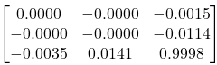
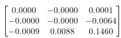
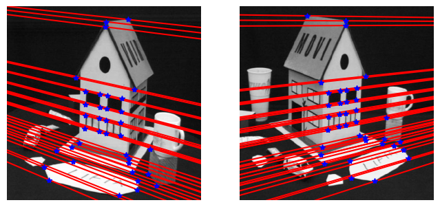
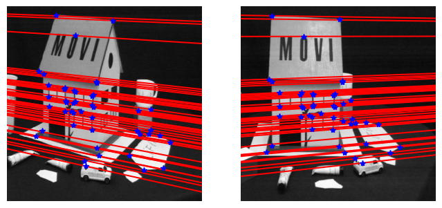
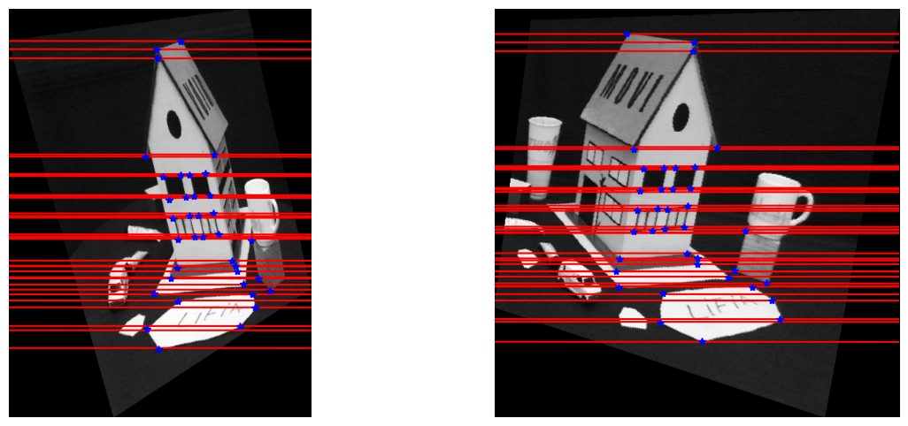
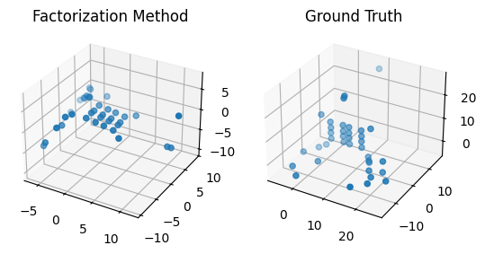
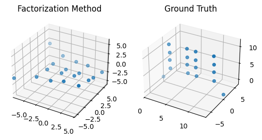
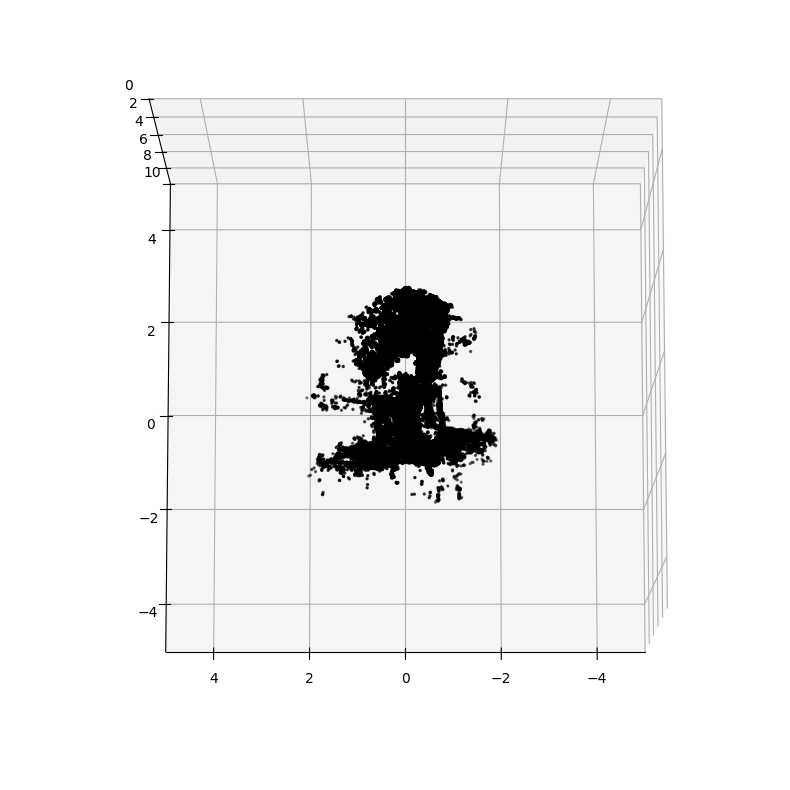
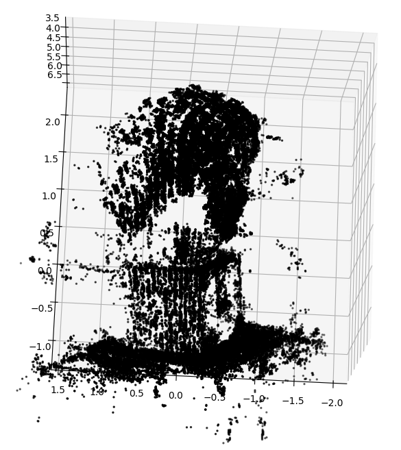
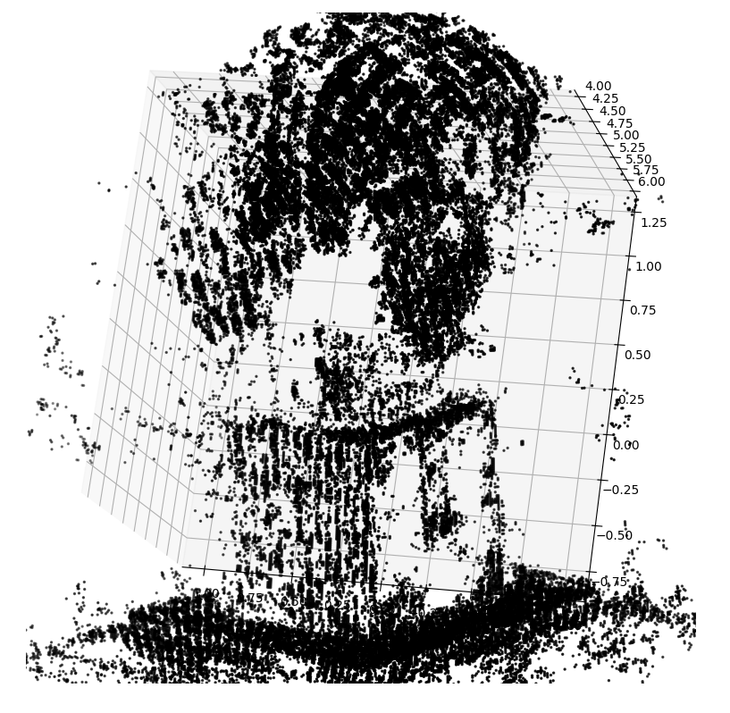

My code implementation for each step in this problem can be found in the file p1.py
The eight point algorithm is a method to estimate the fundamental matrix using eight point correspondences. I implemented this algorithm using linear least-squares via Singular Value Decomposition (SVD) in the function lls_eight_point_alg(). I used SVD again to obtain the closest matrix of rank-two, to which the fundamental matrix is constrained.
Below is the resulting fundamental matrix estimation:

Next, I implemented normalized_eight_point_alg() by normalizing each set of input points such that the mean is zero and the average distance from the origin is the square root of two. The normalization was applied as a matrix transform, which I then transposed and reapplied at the end to get the denoramlized fundamental matrix.
Below is the resulting fundamental matrix from nonlinear estimation:

To measure accuracy, I implemented compute_distance_to_epipolar_lines() as described in part (f) below.
In compute_distance_to_epipolar_lines(), I first compute the epipolar lines. A line can be obtained as Fp' or FTp where p and p' are image points in different camera views. Each element of the resulting line vector corresponds to a coefficient in the standard line equation ax + by + c = 0. The distance to the corresponding point is then calculated using the standard formula for distance between a point and line.
Below are the final epipolar lines and distances:
Distance to lines in image 1 for LLS: 9.70143882943749
Distance to lines in image 2 for LLS: 14.56822719050067

Distance to lines in image 1 for normalized: 0.8895134540568653
Distance to lines in image 2 for normalized: 0.8917343723799903

My code implementation for this problem can be found in the file p2.py
In order to rectify images, I started by finding the epipoles. I implemented this by using singular value decomposition to solve for e in the equation FTe = 0.
The next step is to find the homography mapping epipoles for an image to points at infinity on the horizontal axis. I implemented this using the T R and G matrices described in the assignment.
I then implemented compute_matching_homographies() to find a matching homography for the one we just obtained. It transforms the other image so that its points line up with those in the image I just used in part (b). Specifically, it is the homography the minimizes the sum of square distances between points.
Below is the pair of rectified images. This makes it easier to find corresponding points as you only need to search along one horizontal axis. This is because the rectified epipolar lines (where the correspondences lie) are horizontal and they are vertically aligned with eachother accross images.

My code implementation for this problem is in p3.py
I implemented the function factorization_method() to obtain scene sctructure and camera motion using corresponding image points.
The factorization method uses SVD to decompose a matrix of measurements D known to be equal to the product of a motion matrix M and a structure matrix S. The estimated structure and motion matrices are obtained from subsets of the rows and columns of the matrices resulting from the decomposition. These subsets are selected according to the constraint that the measurement matrix is rank-three.
The SVD of D gives UΣVᵀ.
The subsets of rows and columns are U₃Σ₃V₃ᵀ. (First three columns of U, 3x3 top left corner of Σ, first three rows of Vᵀ)
Then I estimate M as the U₃sqrt(Σ₃), and S as sqrt(Σ₃)V₃ᵀ.
The resulting 3D points are plotted below alongside the ground truth. They differ in scale and rotation, but otherwise have the same structure. This is because of the affine ambiguity. For any factorization D = MS, we can consider an alternative choice D = (MA)(A-1S), where A is an arbitrary affine transformation. Thus, our solution is only determined up to an affine transformation. In this particular case, the ambiguity resulted in a choice that differs from the ground truth by a similarity transformation, affecting the scale and rotation.

Here are the four singular values from the SVD: [959.5852216, 540.47613178, 184.43174791, 27.9151956]
All four singular values are non-zero. I would expect an idealized version of the method to have just three non-zero singular values. This would mean the measurement matrix D is rank-three, which should be true since the points exist in 3D space. However, due to imperfect values in D resulting from measurement noise, the fourth singular value is nonzero. Notice that it is much smaller than the other three singular values, it only differs from zero because of a small amount of noise.
Below are the results using only a subset of the original points. Now they are no longer similar. If you look at the points near the corners, you can see that they are skewed compared to the ground truth. The reason for this is that the true points are all taken from the same plane. Since they are coplanar, we end up with a measurement matrix of only rank-two. As a result, we don't have enough information to properly determine structure and motion matrices

Here are the four singular values from this SVD using a subset of the original points: [264.54396508, 210.06072009, 7.21921783, 5.12857709]
Now the last two singular values are very small compared to the first two. The true 3D points are coplanar, so we expect D to be only rank-two in the ideal case. Although this implies we should get only two non-zero singular values, the result actually makes sense when considering measurement noise. The last two values are close to (but not quite) zero because they are just the result of imperfect measurements. So only the first two singular values are actually significant, which is the result of using coplanar points.
The file p4.py contains my code for this problem. The functions were tested by comparing with the provided example outputs. See the Appendix for full output of the test cases.
For the structure from motion problem, I first implemented estimate_initial_RT(). Using the essential matrix, I obtained four possible pairs of the rotation and translation matrices R and T between two cameras.
I then implemented linear_estimate_3d_point() to obtain an initial estimate of a 3D point from its image coordinates and the camera matrices using SVD.
Next, I implemented reprojection_error() to give the difference between original and reprojected image points as a measure of error. This will be a useful measure for implementing nonlinear optimization later.
In addition, I implemented jacobian() to get the partial derivative of each element of the error vector with respect to each element of the 3d point.
To improve the point estimate with nonlinear optimization, I implemented the Gauss-Newton algorithm in nonlinear_estimate_3d_point(). This makes use of the reprojection_error() and jacobian() functions to minimize the reprojection error.
Finally, I implemented estimate_RT_from_E(). This uses the previous functions to estimate an initial set of four RT pairs and the 3D points for each pair. Then, it returns the RT pair for which the most points had positive depth in both camera frames.
Below are a few slightly different views of the reconstructed statue. If we wanted to reconstruct a larger scene we could run into issues. The method used assumes that all the points chosen for correspondence are visible to all the cameras. It may be difficult to capture a big complicated scene and obtain correspondence points without occlusion. As a result, we would be unable to obtain the correct reconstruction.
|  |
 |
 |
Below is the full output of the test cases for Problem 4
--------------------------------------------------------------------------------
Part A: Check your matrices against the example R,T
--------------------------------------------------------------------------------
Example RT:
[[ 0.9736 -0.0988 -0.2056 0.9994]
[ 0.1019 0.9948 0.0045 -0.0089]
[ 0.2041 -0.0254 0.9786 0.0331]]
Estimated RT:
[[[ 0.98305251 -0.11787055 -0.14040758 0.99941228]
[-0.11925737 -0.99286228 -0.00147453 -0.00886961]
[-0.13923158 0.01819418 -0.99009269 0.03311219]]
[[ 0.97364135 -0.09878708 -0.20558119 0.99941228]
[ 0.10189204 0.99478508 0.00454512 -0.00886961]
[ 0.2040601 -0.02537241 0.97862951 0.03311219]]
[[ 0.98305251 -0.11787055 -0.14040758 -0.99941228]
[-0.11925737 -0.99286228 -0.00147453 0.00886961]
[-0.13923158 0.01819418 -0.99009269 -0.03311219]]
[[ 0.97364135 -0.09878708 -0.20558119 -0.99941228]
[ 0.10189204 0.99478508 0.00454512 0.00886961]
[ 0.2040601 -0.02537241 0.97862951 -0.03311219]]]
--------------------------------------------------------------------------------
Part B: Check that the difference from expected point
is near zero
--------------------------------------------------------------------------------
Difference: 0.0029243053036863698
--------------------------------------------------------------------------------
Part C: Check that the difference from expected error/Jacobian
is near zero
--------------------------------------------------------------------------------
Error Difference: 8.301300130674275e-07
Jacobian Difference: 1.817115702351657e-08
--------------------------------------------------------------------------------
Part D: Check that the reprojection error from nonlinear method
is lower than linear method
--------------------------------------------------------------------------------
Linear method error: 98.73542356894187
Nonlinear method error: 95.59481784846034
--------------------------------------------------------------------------------
Part E: Check your matrix against the example R,T
--------------------------------------------------------------------------------
Example RT:
[[ 0.9736 -0.0988 -0.2056 0.9994]
[ 0.1019 0.9948 0.0045 -0.0089]
[ 0.2041 -0.0254 0.9786 0.0331]]
Estimated RT:
[[ 0.97364135 -0.09878708 -0.20558119 0.99941228]
[ 0.10189204 0.99478508 0.00454512 -0.00886961]
[ 0.2040601 -0.02537241 0.97862951 0.03311219]]
--------------------------------------------------------------------------------
Part F: Run the entire SFM pipeline
--------------------------------------------------------------------------------